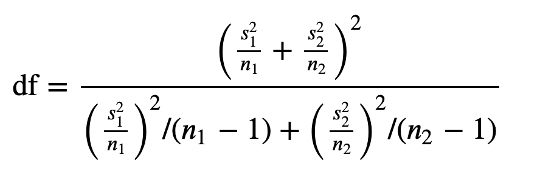
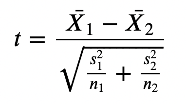

Hypothesis Testing with Python¶
Exercise 1: t-test degrees of freedom¶
Using the formula below (which applies to t-tests with unequal degrees of freedom), create a python function that performs this calculation

-
s1 = standard deviation of sample 1
-
n1 = sample 1 size
Calculate the degrees of freedom for:
- s1 = 5.32, n1 = 10
- s2 = 7.03, n2 = 12
def degrees_of_freedom_t_test(s1,n1,s2,n2):
s1n1 = (s1**2)/n1
s2n2 = (s2**2)/n2
top = (s1n1+s2n2)**2
bottom = ((s1n1)**2)/(n1-1) + ((s2n2)**2)/(n2-1)
return top/bottom
degrees_of_freedom_t_test(5.32,10,7.03,12)
19.853795244472487
Exercise 2: Perform a two sample t-test¶
Create a python function performs a two sample t-test of unequal variances. Use your result from problem 1 to calculate the degrees of freedom. The function arguments should be;
- sample_mean1
- sample_mean2
- sample_std1 (standard deviation)
- sample_std2
- n1 (sample 1 size)
- n2
- tails (the number of tails for the test)
- alpha (the significance level)
Make the function print the;
- p_value
- test statistic
- critical value
- alpha
Make the function return one of two conclusions;
Reject null hypothesis(ifp_value < alphaand|test_statistic|>|critical_value|)- Otherwise,
Fail to reject null hypothesis
RECALL
We calculate the test_statistic by;

HINTS
p_valuecan be calculated using(1 - t.cdf(abs(t_statistic), df))FOR EACH TAILcritical_valuecan be calculate usingt.ppf(1 - alpha / tails, df)
Run this function for the following values (from lecture notes):
- sample_mean1 = 22.29
- sample_mean2 = 16.3
- sample_std1 = 5.32
- sample_std2 = 7.03
- n1 = 10
- n2 = 12
- tails = 2
- alpha = 0.05
from scipy.stats import t
def calculate_t_test(sample_mean1, sample_mean2, sample_std1, sample_std2, n1, n2, tails,alpha):
# Calculate the t-statistic
df = round(degrees_of_freedom_t_test(sample_std1,n1,sample_std2,n2))
standard_error = ((sample_std1 ** 2) / n1 + (sample_std2 ** 2) / n2) ** 0.5
test_statistic = (sample_mean1 - sample_mean2) / (standard_error)
# Calculate the p-value
p_value = tails*(1 - t.cdf(abs(test_statistic), df))
# Calculate the critical value
critical_value = t.ppf(1 - alpha / tails, df)
print('p_value: {}'.format(p_value))
print('critical_value: {}'.format(critical_value))
print('test_statistic: {}'.format(test_statistic))
print('Significance level alpha: {}'.format(alpha))
if p_value<=alpha:
if critical_value<0 and test_statistic<critical_value:
return "Reject Null Hypothesis"
elif critical_value>0 and test_statistic>critical_value:
return "Reject Null Hypothesis"
else:
return "Fail to Reject Null Hypothesis"
calculate_t_test(22.29, 16.3, 5.32, 7.03, 10, 12, tails=2,alpha=0.05)
p_value: 0.03425038740869879
critical_value: 2.0859634472658364
test_statistic: 2.2723574890239813
Significance level alpha: 0.05
'Reject Null Hypothesis'
Exercise 3: Plotting a t-distribution¶
Using matplotlib make a plot of the t-distribution for 20 degrees of freedom.
- Define the horizontal values using
x = np.linspace(-4,4,500) - Define the vertical values using
t.pdf(horizontal_values, degrees of freedom) - Use the
plt.plot(horizontal_values, vertical_values, label = ....)to plot the graph - Give the horizontal axis a label
t-score - Give the vertical axis a label
Probability density - Make a vertical line for the test statistic using
plt.axviline(test_statistic,linestyle=':',label='test_statistic') - Give it a legend using the
plt.legend()function - Shade the tails using the following;
- alpha:
plt.fill_between(x, pdf, where=(x < -critical_value) | (x > critical_value),...)give it the color red and an alpha (transparency parameter) value of 0.2 and label ofalpha = 0.05 - p-value:
plt.fill_between(x, pdf, where=abs(x) > test_statistic, color='darkred',...)transparency parameter= 0.4 and labelp_value
- alpha:
- Show the plot
import numpy as np
import matplotlib.pyplot as plt
from scipy.stats import t
# Set the degrees of freedom
df = 20
# Set the range of x-values
x = np.linspace(-4, 4, 500)
# Compute the probability density function (PDF) for the t-distribution
pdf = t.pdf(x, df)
# Create the plot
plt.plot(x, pdf, 'b-', label='t-distribution (df=20)')
# Compute the critical values for alpha = 0.05 (two-tailed test)
alpha = 0.05
critical_value = t.ppf(1 - alpha/2, df)
test_statistic = 2.272
# Shade the critical regions
plt.fill_between(x, pdf, where=(x < -critical_value) | (x > critical_value), color='red', alpha=0.2, label='Alpha = 0.05')
plt.fill_between(x, pdf, where=abs(x) > test_statistic, color='darkred', alpha=0.4,label='p-value')
# Add labels and a legend
plt.xlabel('t score')
plt.ylabel('Probability Density')
plt.title('t-Distribution with 20 Degrees of Freedom')
plt.axvline(test_statistic,linestyle=':',label='test statistic')
plt.legend()
# Display the plot
plt.show()

Exercise 4: Chi2 distribution¶
Using the observations from the lecture slides;
[[60, 40, 30]
[80, 70, 50]
[70, 90, 40]]
- Perform a chi2 test using the
chi2_contingency()function from thescipy.statspackage - Let
alpha=0.05 -
Find the
critical_valueusingchi2.ppf(1 - alpha, df)from function fromscipy.stats -
Print
Reject the null hypothesisifp_value<=alpha&test_statistic>critical_value - Otherwise,
Fail to reject null hypothesis
from scipy.stats import chi2_contingency,chi2
# Observed frequencies (contingency table)
alpha = 0.05
observed_freq = np.array([[60, 40, 30],
[80, 70, 50],
[70, 90, 40]])
# Perform chi-square test of independence
test_statistic, p_value, df, expected_freq = chi2_contingency(observed_freq)
critical_value = chi2.ppf(1 - alpha, df)
# Print the chi-square test statistic, degrees of freedom, and p-value
print("Chi-square statistic:", test_statistic)
print("Degrees of freedom:", dof)
print("p-value:", p_value)
print('alpha:',alpha)
print('critical_value:',critical_value)
if p_value<=alpha and test_statistic>critical_value:
print("Reject Null hypothesis")
else:
print("Fail to reject null hypothesis")
Chi-square statistic: 8.469322344322341
Degrees of freedom: 4
p-value: 0.07582258667376501
alpha: 0.05
critical_value: 9.487729036781154
Fail to reject null hypothesis